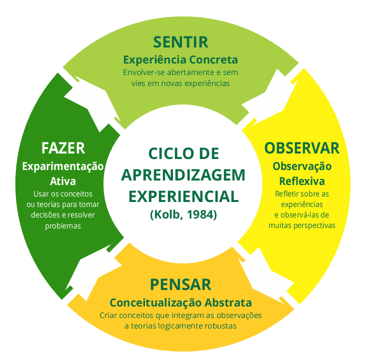

Como se sabe todo fim tem um inicio e toda estrutura tem que ter uma fundação
A educação é o pilar, primeiro ela é o nó inicial de uma arvore ramificada além de ser um ciclo
A educação proporciona todo desenvolvimento sustentável, social e governamental
se quisermos realmente mudar o mundo o que precisa ser mudado é o estilo educacional a conscientização e a fiscalização
